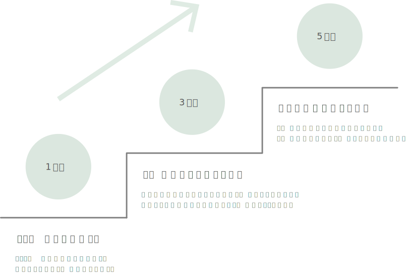

長谷川 茂実
ビジネス書出版社にて働きながら、2024年2月よりWEBデザイナーを目指して勉強しています。デザインに興味を持ち始めたのは、マーケティングを学びはじめたことがきっかけです。デザインは、人の心を動かすことに大きく影響して いると、仕事をする中で実感することが多く、自分の手でクリエイティブを作り たいと思うようになりました。今後はマーケティングだけでなく、デザインのスキ ルも習得し、マルチに活躍できる人材を目指しています。
顧客を理解することに本気で向き合っています。市場調査、データ分析、ペルソナ設定を行い、顧客が何に悩み、何を求めているのかを考え、仮説を持って対処することを心がけています。
現状に満足せず、成長し続けたいという確固たる意志と、実際に努力し続ける継続力があります。そのため、新しいことへの挑戦も、抵抗なく取り組むことができます。
相手との信頼関係を築くために、コミュニケーションはとても重要だと考えています。特にビジネスにおいては、相手がどのような立場でどういった人と関わり合っているのかなども想像しながら、相手目線で考えることを大切にしています。
営業サポートとしてエクセルを極める
インフラ企業の営業サポートとして、細かいデータを整える業務を担当しました。 関数やピボットテーブルなどを使い、どうしたら効率よく業務を進められるかを考え取り組んでいました。 スピード感と正確さに関しては周りからも評価をいただいていました。
寝ても覚めてもInstagram時代
Instagramにてインフルエンサーを起用したSNSマーケティングを行う企業で、アシスタント業務を担当しました。 世の中でバズっているものはなにか、をリサーチし、なぜ流行っているのかを考えることが求められたため、 業務時間外でもアンテナをはり情報収集していました。 また、Instagramの公式アカウント運用にも携わり、クリエイティブ画像の撮影やインサイト分析も行いました。
マネージャーを支える「縁の下の力持ち」
ネット動画配信事業を行う企業で、アナウンサーのサポート、および編成戦略のアシスタント業務を担当しました。 人と関わる機会が多いポジションだったため、チャット上でのコミュニケーションのスピード感と相手を思いやる伝え方などが今まで以上に磨かれました。 マネージャーは前線で働く忙しい方だったので、先回りしてサポートしたり、急な対応が求められた際も優先順位を考え、臨機応変に対処していました。
ビジネス書出版社にて挑戦の毎日
サポート役としてはこれ以上スキルアップすることは難しいと思い、異なる職種にチャレンジすることを決意し出版社に転職しました。 入社後は、マーケティング部に配属され、未経験からスタートとなりました。 休みの日に勉強し知識をたくわえたうえで、現場で実践するという毎日で、仕事を自分ゴト化し積極的に取り組んでいます。
WEBデザインの勉強をはじめる
出版社でマーケティングを学ぶうちに、人の心を動かすデザインに魅力を感じるようになり、本格的に勉強をはじめました。 並行して勉強しているデジタルマーケティングの知識も活用しながら、結果に結びつくようなデザインを生み出せるようになるのが目標です。
ビジネスの現場においてWEBデザインの勉強で学んだことを活かせるように、実務経験を積むことが当面の目標です。１度仕事で携わった人と信頼関係を築き、何度もリピートしていただけるようなデザイナーになりたいです。
